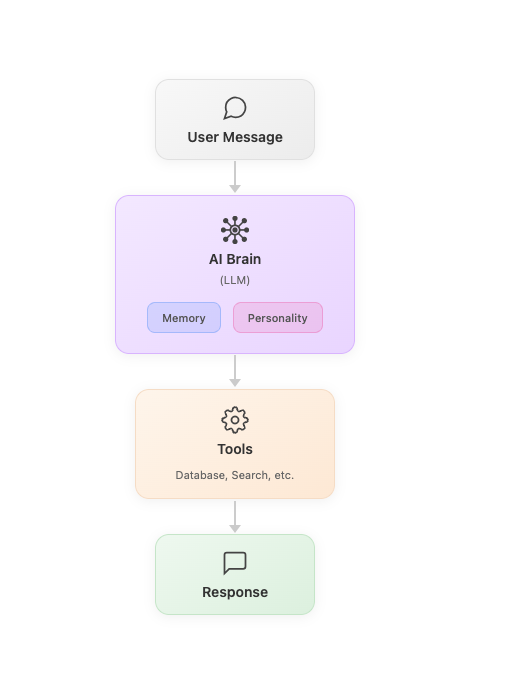
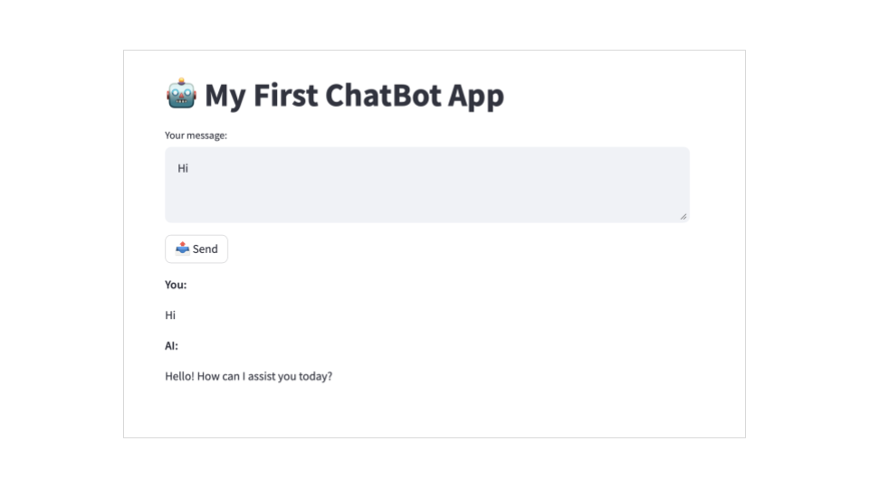

Modular AI Chatbot Platform
A progression of chatbot builds that moved from basic prompt-response to full database integration and RAG-powered retrieval , each iteration adding a distinct product capability and uncovering the real engineering tradeoffs that shape AI product decisions.


Understanding conversational AI from the inside out
Most PMs working on AI products are one layer removed from the implementation. They understand what LLMs can do in concept, but not the engineering tradeoffs that determine what gets shipped and what doesn’t.
To make better product decisions on AI features , scoping, prioritisation, evaluation criteria , I needed direct experience building conversational AI systems at increasing levels of complexity.
The goal wasn’t to become an engineer. It was to understand the product surface deeply enough to write better specs, ask better questions, and know which tradeoffs matter.
What does each layer of AI capability actually cost?
From basic prompt-response to tool-calling to RAG-backed database queries , what changes at each step, and why does it matter for product decisions?
Better specs come from better understanding
A PM who has built a RAG system writes fundamentally different requirements for one than a PM who hasn’t.
Five iterations, five capability milestones
Each version of the chatbot added a distinct capability layer. The progression wasn’t about making it smarter , it was about understanding what each architectural decision unlocks and what it costs.
Final architecture: RAG pipeline
By iteration 5, the chatbot runs a full RAG pipeline. Each user query flows through retrieval before reaching the LLM, grounding every response in actual database content.
What building taught me about product decisions
“Every architectural choice in an AI system is a product tradeoff. You can’t make good tradeoffs without understanding what each choice costs.”
Correctness is harder to define than it looks
At iteration 1, “correct” was obvious. By iteration 5, defining what a good answer looks like required explicit product thinking , not just engineering checks.
Tool-calling changes the PM surface dramatically
Once tools are involved, the product surface expands: error states, fallbacks, transparency to the user, and trust all become live design questions.
- RAG is a product design problem: The corpus quality, taxonomy, and versioning strategy are product decisions. The embedding model is almost irrelevant by comparison.
- Memory is always a tradeoff: More context = better answers and higher cost. Deciding what to remember is a product call, not an engineering one.
- System prompts are specs: Writing a good system prompt is the same skill as writing a good PRD , precision, scope, and edge case handling matter.
- Tool failure paths are features: How the product behaves when a tool call fails is as important as how it behaves when it succeeds.